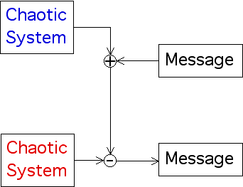
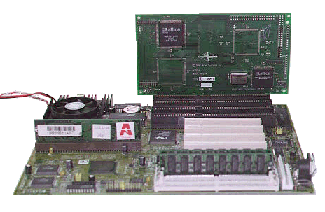

| As soon as chaos was widely known, some believed it could be used for secure communication. |
| Take a chaotic signal, add a message (of small amplitude relative to the chaotic signal), and transmit the sum. |
| Anyone listening to the sum will just hear chaos. |
| The intended receiver has a chaotic system synchronized to the chaotic transmitter. Subtracting signal + message from the receiver's signal leaves just the message. |
|  |
| The problem is how to synchronize the two chaotic systems. The most common approach is to use circuits that mimic the (chaotic) Lorenz equations for weather. We illustrate the same idea using coupled map lattices. |
| Here is a picture of a circuit implementing chaotic secure communication. |
|  |
Return to Synchronization of Chaotic Processes.